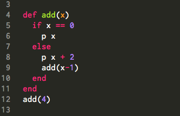
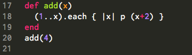

Recursion Intro
12.31.2014
In the beginning stages of Phase 0 we were told to stay away from recursion. The reasoning behind this was to spend time focusing on using iterators. Finally, as part of week 8's curriculum, we were asked to research a topic in further detail. Finally, here's the much-anticipated overview of recursion and its usefulness.
What is recursion?
A function that calls itself. Think of it as a program that delegates a big problem, divvying the problem up into smaller chunks.
Conditions:
- Has a base case (end goal) so the program can terminate - Has a method to reach the end goal
Keep in mind that recursion should only be implemented when appropriate. Sometimes a loop may be a faster method to obtain the same goal.
Recursion:
Iteration:
I hope this brief introduction to recursion was helpful. It certainly has cleared up some of the recursive mystique (for me) but there is plenty more to learn!